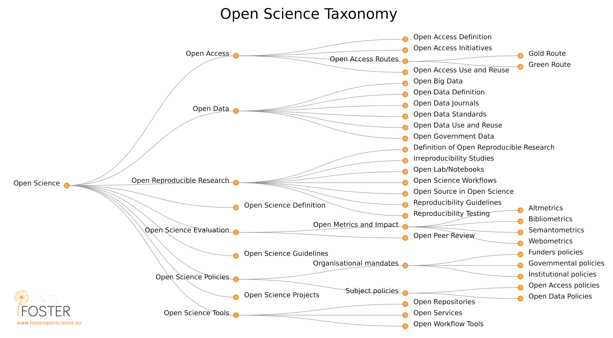

1. Conceptos y principios
¿Qué es?
La Ciencia Abierta es la práctica de la ciencia de forma que otros puedan colaborar y contribuir, donde los datos de investigación, las notas de laboratorio y otros procesos de investigación están disponibles de manera gratuita, con licencias que permiten la reutilización, redistribución y reproducción de la investigación,sus datos y métodos subyacentes FOSTER Open Science Definition. En pocas palabras, la Ciencia Abierta es un conocimiento transparente y accesible que se comparte y se desarrolla a través de redes de colaboración. (Vicente-Sáez & Martínez-Fuentes 2018).
La Ciencia Abierta se refiere a un mayor rigor, responsabilidad y reproducibilidad para la investigación. Se basa en los principios de inclusión, imparcialidad, equidad y distribución, y en última instancia busca cambiar la forma en que se realiza la investigación, quién participa y cómo se valora. Su objetivo es hacer que la investigación sea más abierta a la participación, revisión, refutación, mejora y reutilización para que el mundo se beneficie.
Hay varias definiciones de "apertura" con respecto a varios aspectos de la ciencia; el proyecto Open Definition la define así: "Los datos y el contenido abiertos pueden ser utilizados, modificados y compartidos libremente por cualquier persona para cualquier propósito". El Acceso Abierto abarca una variedad de prácticas, que generalmente incluyen áreas como acceso abierto a publicaciones, datos abiertos de investigación, software / herramientas de código abierto, flujos de trabajo abiertos, ciencia ciudadana, recursos educativos abiertos y métodos alternativos para la evaluación de la investigación, incluida la revisión por pares abierta. (Pontika et al., 2015).Pontika et al. (2015)
Fecher & Friesike (2013) analizan los objetivos y supuestos que subyacen en el impulso para implementar estas prácticas. En la literatura encontramos cinco grandes concepciones, o "escuelas de pensamiento" que son:
Escuela democrática: Al creer que existe una distribución desigual del acceso al conocimiento, esta escuela se preocupa por hacer que el conocimiento académico (incluyendo publicaciones y datos) esté disponible gratuitamente para todos.
Escuela pragmática: Siguiendo el principio de que la creación de conocimiento es hace más eficiente a través de la colaboración y se fortalece a través de la crítica, esta escuela busca aprovechar los efectos de la red al conectar a los académicos y hacer que los métodos académicos sean transparentes.
Escuela de infraestructura: Esta concepción viene apoyada por el hecho de que una investigación eficiente requiere plataformas, herramientas y servicios fácilmente disponibles para la difusión y la colaboración.
Escuela pública: Basado en el reconocimiento de que el verdadero impacto social requiere un compromiso social en la investigación y una comunicación de resultados científicos fácilmente comprensible, esta escuela busca atraer al público a colaborar en la investigación a través de la ciencia ciudadana, y hacer que los estudios sean más fáciles de entender A través de resúmenes laicos, blogs y otros métodos comunicativos menos formales.
Escuela de la métrica: Basado en el reconocimiento de que las métricas tradicionales para medir el impacto científico han demostrado ser problemáticas (al centrarse demasiado en las publicaciones, a menudo solo a nivel de revista, por ejemplo), este capítulo busca "métricas alternativas"que pueden hacer uso de las nuevas posibilidades de las herramientas digitalizadas en red para rastrear y medir el impacto de la beca a través de actividades antes invisibles.
Justificación
La Ciencia Abierta, como se definió anteriormente, abarca una gran cantidad de cambios estructurales potenciales a la práctica académica, cuya práctica puede ser a menudo jerárquica y conservadora. Además, incluso cuando los investigadores simpaticen con los objetivos de la Ciencia Abierta, es posible que todavía no vean el valor de asumirlos, ya que los mecanismos de incentivación existentes aún no reflejan esta nueva cultura de apertura y colaboración. Como consecuencia, convencer a los investigadores de la necesidad de cambiar sus prácticas requerirá un buen conocimiento no solo de los beneficios éticos, sociales y académicos, sino también de las formas en que las prácticas de la Ciencia Abierta les ayudarán a tener éxito en su trabajo. Esta sección describirá algunos de los conceptos, principios, implicados y prácticas fundamentales en Ciencia Abierta, y cómo estos se ajustan a un ecosistema de investigación más amplio.

Objetivos del aprendizaje
Comprender los principios y conceptos sociales, económicos, legales y éticos que sustentan a la Ciencia Abierta.
Familiarizarse con la historia de Ciencia Abierta, y la disparidad y diversidad de opiniones de diferentes comunidades de investigación, disciplinas y culturas.
Obtener información sobre los desarrollos en torno a la Ciencia Abierta y el impacto personal que estos pueden tener en los investigadores, la investigación y la sociedad en general.
Componentes clave
Habilidades y conocimiento
La Ciencia Abierta es el movimiento que surje para ayudar a que los resultados de la investigación académica sean más accesibles, incluidos el código, los datos y los trabajos de investigación.
- Abarca muchos aspectos diferentes, pero a menudo relacionados, que afectan el ciclo de vida completo de la investigación, incluidas las publicaciones abiertas, los datos abiertos, el software de código abierto, los open notebooks, la revisión abierta por pares, la difusión abierta y los materiales abiertos (consulte el glosario para ver las definiciones).
Historia de la Ciencia Abierta, y las motivaciones detrás del movimiento.
Los orígenes de la publicación académica comenzaron en el siglo XVII con las primeras revistas académicas.
Se incrementa la motivación para compartir recursos entre las disciplinas de investigación, así como mayor transparencia para una mejor eficiencia, rigor, responsabilidad, sostenibilidad para las generaciones futuras y reproducibilidad.
Casos éticos en los que una mayor transparencia puede reducir el fraude, la manipulación de datos y el informe selectivo de los resultados.
El estado actual surgió como consecuencia de la presión de las instituciones academicas de investigación y los gobiernos para que la investigación financiada con fondos públicos se compartiera de manera más abierta, a menudo con el propósito de acelerar el crecimiento e innovación social o económica.
Los resultados de la investigación financiada con fondos públicos deben estar disponibles públicamente.
La necesidad de impulsar el cambio cultural en la investigación y entre los investigadores.
Adopción de herramientas y tecnologías basadas en la Web para facilitar la colaboración científica.
Diferencias y puntos en común dentro de las prácticas, los principios y las comunidades de Open Science.
En general, se acepta que la Ciencia Abierta conlleva un mayor impacto asociado con un uso y una reutilización más amplios (por ejemplo, la llamada ventaja de citas de acceso abierto).
La Ciencia Abierta podría aumentar la confianza en la ciencia y en la fiabilidad de los resultados científicos.
La Ciencia Abierta y sus vínculos con las licencias, y aspectos relacioandos con los derechos de autor.
- Por lo general, los resultados de la investigación abierta tienen una licencia abierta para maximizar la reutilización y al mismo tiempo permitir al creador conservar la propiedad y recibir reconocimiento por su trabajo.
Preguntas, obstáculos e interpretaciones erróneas comunes
P: "¿Cuál es la diferencia entre Ciencia Abierta y "ciencia"?"
R: La Ciencia Abierta se orienta a hacer ciencia tradicional con más transparencia, por ejemplo, al compartir abiertamente código y los datos. Muchos investigadores ya lo hacen, pero no lo llaman así.
P: "¿La'Ciencia Abierta' excluye a las Humanidades y las Ciencias Sociales?"
R: No, el término de Ciencia Abierta es inclusivo. De hecho, el caso es que, a veces, la Ciencia Abierta se conoce más ampliamente como 'Investigación Abierta' o 'Academia Abierta' para incluir otras disciplinas, principios y prácticas. Sin embargo, la Ciencia Abierta es un término comúnmente usado en múltiples niveles y, por lo tanto, tiene sentido adoptarlo con fines de comunicación, con la condición de que incluya todas las disciplinas de investigación.
P: "¿La Ciencia Abierta conduce al mal uso o a que la investigación sea malinterpretada?"
R: No, la aplicación de los principios de Ciencia Abierta es, de hecho, una salvaguarda contra el uso indebido o el malentendido. La transparencia genera confianza, responsabilidad y permite a otros verificar y validar el proceso de investigación.
P: "¿Conducirá la Ciencia Abierta a una sobrecarga de información?"
R: Es mejor tener demasiada información y tratar con ella, que tener muy poca y vivir con el riesgo de perder las partes importantes. Y existen tecnologías como las fuentes RSS, el aprendizaje automático y la inteligencia artificial que facilitan la agregación de contenido.
Los resultados del aprendizaje
Ser capaz de explicar los principios y conceptos académicos, económicos y sociales que subyacen y respaldan la Ciencia Abierta, y por qué es importante en términos más amplios.
Comprender las numerosas dimensiones de la Ciencia Abierta, y algunas de las herramientas y prácticas involucradas en ello.
Familiarizarse con el estado actual de la Ciencia Abierta y la diversidad de perspectivas que esto conlleva.
Lecturas adicionales
European Commission's Directorate-General for Research & Innovation (RTD) (2016). Open innovation, Open Science, open to the world - a vision for Europe. ec.europa.eu/digital-single-market/en/news/open-innovation-open-science-open-world-vision-europe
Fecher and Friesike (2014). Open Science: One Term, Five Schools of Thought. doi.org/10.1007/978-3-319-00026-8_2
High Level Group (2017). Europe's future. Open innovation, Open Science, open to the world: reflections of the Research, Innovation and Science Policy Experts (RISE). doi.org/10.2777/79895
Masuzzo and Martens (2017). Do you speak Open Science? Resources and tips to learn the language. doi.org/10.7287/peerj.preprints.2689v1
Watson (2015). When will ‘Open Science’ become simply ‘science’?. doi.org/10.1186/s13059-015-0669-2